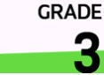
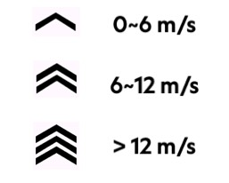

Module Introductie¶
I Realtime Monitoring Gegevens¶
1. Huidig Vermogen¶
Toont realtime geproduceerd fietsvermogen.
Kleuren
Dit is een module die achtergrondkleuren kan weergeven. Kleurvolgordes kunnen in de ConnectIQ app tussen twee stijlen worden gekozen. Gebruikers kunnen echter geen individuele kleuren of zonebereiken aanpassen.
- Garmin stijl: Grijs-Blauw-Groen-Geel-Oranje-Rood-Paars (Zone1~Zone7)
- Wahoo stijl: Grijs-Donkerblauw-Lichtblauw-Groen-Geel-Oranje-Rood (Zone1~Zone7)
2. Huidige Snelheid¶
Toont de huidige fietssnelheid. De eenheid is consistent met de instellingen van de gebruiker in Garmin Connect (km/u/mph).
Gemiddelde Snelheidsindicator¶
Dit is een instelling die kan worden in- of uitgeschakeld om de huidige snelheid te vergelijken met de gemiddelde snelheid binnen de module voor huidige snelheid. Deze kan in de ConnectIQ app worden ingesteld. Er zijn twee weergavemodi: "Pijl" en "Achtergrond".
- "Pijl"

- Omhoog: Boven gemiddelde snelheid
- Omlaag: Onder gemiddelde snelheid
- Niet getoond: Gelijk aan gemiddelde snelheid of rit niet gestart
- "Achtergrond"
- Rood: Onder gemiddelde snelheid
- Groen: Boven gemiddelde snelheid
3. Huidige Hartslag¶
Toont realtime hartslaggegevens.
Kleuren
Dit is een module waarmee achtergrondkleuren kunnen worden ingesteld. Kleurvolgordes kunnen in de ConnectIQ app tussen twee stijlen worden gekozen. Gebruikers kunnen echter geen individuele kleuren of zonebereiken aanpassen.
- Garmin stijl: Grijs-Grijs-Blauw-Groen-Geel-Rood (<Zone1, Zone1~Zone5)
- Wahoo stijl: Grijs-Blauw-Groen-Geel-Oranje-Rood (<Zone1, Zone1~Zone5)
4. Huidige Cadans¶
Geeft de realtime cadanswaarde weer.
5. Huidige Hoogte¶
Geeft de huidige hoogte weer. De eenheid is consistent met de instellingen van de gebruiker in Garmin Connect (m/ft).
6. Huidige Stijging*¶
Geeft de huidige stijging weer.
*Garmin biedt geen officiële data-interface, dus berekende gegevens kunnen onnauwkeurigheden of fouten bevatten
Kleuren
Dit is een module die achtergrondkleuren kan weergeven. Kleuren veranderen afhankelijk van de bijbehorende stijging, maar gebruikers kunnen kleuren of stijgingsbereiken niet aanpassen.
| Voorbeeld |  |
 |  |
 |
 |
 |
|---|---|---|---|---|---|---|
| Stijgingsbereik | < 0,5% | 0,5%~3,99% | 4%~7,99% | 8%~11,99% | 12%~19,99% | > 20% |
II Gemiddelde en Cumulatieve Gegevens¶
7. Gemiddeld Vermogen 3s*¶
Geeft het gemiddelde vermogen van de afgelopen 3 seconden weer. Kleurweergave hetzelfde als realtime vermogen.
*Garmin biedt geen officiële data-interface, dus berekende gegevens kunnen onnauwkeurigheden of fouten bevatten
8. Gemiddeld Vermogen 5s*¶
Geeft het gemiddelde vermogen van de afgelopen 5 seconden weer. Kleurweergave hetzelfde als realtime vermogen.
*Garmin levert geen officiële data-interface, waardoor berekende gegevens onnauwkeurigheden of fouten kunnen bevatten
9. Gemiddeld vermogen 10s*¶
Toont het gemiddelde vermogen van de afgelopen 10 seconden. Kleurweergave is hetzelfde als het realtime vermogen.
*Garmin levert geen officiële data-interface, waardoor berekende gegevens onnauwkeurigheden of fouten kunnen bevatten
10. Ronde gemiddeld vermogen*¶
Toont het gemiddelde vermogen voor de huidige ronde.
*Garmin levert geen officiële data-interface, waardoor berekende gegevens onnauwkeurigheden of fouten kunnen bevatten
11. Gemiddelde snelheid¶
Toont de gemiddelde snelheid voor de huidige activiteit.
12. Activiteit tijd¶
Toont de duur van de huidige activiteit.
13. Rondetijd*¶
Toont de duur van de huidige ronde.
*Garmin levert geen officiële data-interface, waardoor berekende gegevens onnauwkeurigheden of fouten kunnen bevatten
14. Afstand¶
Toont de cumulatieve afgelegde afstand voor de huidige activiteit.
15. Calorieën¶
Toont het aantal verbrande calorieën tijdens de huidige activiteit.
III Trainingsgegevens¶
16. Huidige vermogen-gewicht verhouding¶
Toont de realtime vermogen-gewicht verhouding voor de huidige activiteit in W/kg. Het vermogen komt van de MyGahoo instellingenpagina, en het gewicht van de Garmin persoonlijke profiel configuratie.
17. Gemiddeld vermogen-gewichtsverhouding (3s)*¶
Geeft de gemiddelde vermogen-gewichtsverhouding van de afgelopen 3 seconden weer in W/kg.
*Garmin biedt geen officiële data-interface, dus berekende gegevens kunnen onnauwkeurigheden of fouten bevatten
18. Gemiddeld vermogen-gewichtsverhouding (10s)*¶
Geeft de gemiddelde vermogen-gewichtsverhouding van de afgelopen 10 seconden weer in W/kg.
*Garmin biedt geen officiële data-interface, dus berekende gegevens kunnen onnauwkeurigheden of fouten bevatten
19. Gemiddeld vermogen-gewichtsverhouding (ronde)*¶
Geeft de gemiddelde vermogen-gewichtsverhouding van de huidige ronde weer in W/kg.
*Garmin biedt geen officiële data-interface, dus berekende gegevens kunnen onnauwkeurigheden of fouten bevatten
20. NP™ (Genormaliseerd vermogen)*¶
Geeft het genormaliseerde vermogen voor de huidige activiteit weer.
Risico op gegevensverlies
Als u het MyGahoo-veld tijdens de activiteit opnieuw toevoegt, of andere rijmodi selecteert, worden de gegevens in deze module gewist. (De door Garmin zelf geregistreerde activiteit wordt echter niet beïnvloed, alleen MyGahoo begint opnieuw met het verzamelen van deze gegevens vanaf nul).
™Genormaliseerd vermogen (NP) en Training Stress Score (TSS) zijn gedeponeerde handelsmerken van Peaksware, LLC.
*Garmin biedt geen officiële data-interface, dus berekende gegevens kunnen onnauwkeurigheden of fouten bevatten
21. TSS™ (Training Stress Score)*¶
Toont de trainingsbelastingscore voor de huidige activiteit.
Risico op gegevensverlies
Als u het MyGahoo-veld tijdens de activiteit opnieuw toevoegt, of terugkeert naar de huidige modus nadat u andere rijmodi heeft ingevoerd, worden de gegevens in deze module gewist. (De activiteit die door Garmin zelf is geregistreerd, wordt echter niet beïnvloed, alleen MyGahoo begint deze gegevens opnieuw vanaf nul te verzamelen).
™Normalized Power (NP) en Training Stress Score (TSS) zijn gedeponeerde handelsmerken van Peaksware, LLC.
*Garmin biedt geen officiële data-interface, dus berekende gegevens kunnen onnauwkeurigheden of fouten bevatten.
IV Uitrustingsinformatie¶
22. Versnelling (Tanden)¶
Toont het aantal tanden van het huidige kettingblad/cassette. Bijv. 52/13
23. Versnelling (Index)¶
Toont het huidige kettingblad/cassette indexnummer. Bijv. 1/7
24. Versnellingsverhouding¶
Toont de huidige overbrengingsverhouding van kettingblad gedeeld door cassette tanden. Bijvoorbeeld: 4.02
25. Versnellingsgrafiek¶
Geeft grafisch versnellingsinformatie weer.
V Gegevensanalyse¶
26. Realtime Links-Rechts Balans¶
Toont de huidige links-rechts vermogensbalans. Wordt weergegeven als percentage zonder het % symbool, bijvoorbeeld: 52-48
27. Gemiddelde Links-Rechts Balans (3s)*¶
Toont de gemiddelde links-rechts vermogensbalansverhouding over 3 seconden.
*Garmin biedt geen officiële data-interface, dus berekende gegevens kunnen onnauwkeurigheden of fouten bevatten
28. Vermogenzone Histogram*¶
Toont de tijdsverdeling over verschillende vermogenszones.
Gegevensverlies
Als u het MyGahoo-veld tijdens de activiteit opnieuw toevoegt, of terugkeert naar de huidige modus na het betreden van andere rijmodi, worden de gegevens in deze module gewist. (De door Garmin zelf geregistreerde activiteit wordt echter niet beïnvloed, alleen MyGahoo begint deze gegevens opnieuw vanaf nul te verzamelen).
*Garmin biedt geen officiële data-interface, dus berekende gegevens kunnen onnauwkeurigheden of fouten bevatten
29. Hartritmezone Histogram*¶
Toont de tijdsverdeling over verschillende hartritmezones.
Gegevensverlies
Als u het MyGahoo-veld tijdens de activiteit opnieuw toevoegt, of terugkeert naar de huidige modus na het betreden van andere rijmodi, worden de gegevens in deze module gewist. (De door Garmin zelf geregistreerde activiteit wordt echter niet beïnvloed, alleen MyGahoo begint deze gegevens opnieuw vanaf nul te verzamelen).
*Garmin biedt geen officiële data-interface, dus berekende gegevens kunnen onnauwkeurigheden of fouten bevatten
VI Omgevingsinformatie¶
30. Klok¶
Toont de huidige tijd.
31. Wind*¶
Toont de huidige windsnelheid en de relatieve/absolute windrichting.
*Garmin levert geen officiële data-interface, dus berekende gegevens kunnen onnauwkeurigheden of fouten bevatten
Wind snelheidseenheden¶
- m/s: meter per seconde
- KPH: kilometer per uur
- MPH: mijl per uur
- Beaufort schaal: windschaal, 0~12 niveaus
Windsnelheidsniveau¶
Het windsnelheidsniveau wordt aangegeven door het aantal pijlen, waarbij verschillende aantallen overeenkomen met de windsnelheid zoals weergegeven in de onderstaande afbeelding. Wanneer de geselecteerde windsnelheidseenheid niet m/s is, wordt het aantal pijlen nog steeds berekend op basis van de juiste windsnelheid in plaats van het weergegeven getal.

Absolute/Relatieve windrichting¶
- Absolute richting: Windrichting zoals gegeven in het weerbericht, onafhankelijk van de rijrichting
- Relatieve richting: De relatieve hoek tussen de huidige rijrichting en de windrichting. Bijvoorbeeld, als je naar het westen rijdt met een absolute windrichting van noord naar zuid, is de relatieve windrichting van rechts naar links.
Windrichting kleuren¶
Bij het weergeven van de relatieve windrichting worden pijlen gekleurd op basis van de windhoek. Rood geeft tegenwind aan (relatieve wind van 45° links voor tot 45° rechts voor); groen geeft meewind aan (relatieve wind van 45° links achter tot 45° rechts achter); zwart geeft zijwind aan.

Configuratie¶
De windmodule moet in de ConnectIQ app worden geconfigureerd voor optimale weergave. Raadpleeg de Weerconfiguratie module voor meer details.
VII Virtuele LED's¶
Virtuele LED's kunnen rond de schermranden worden geconfigureerd. Gebruikers kunnen LED's op verschillende posities gebruiken om verschillende informatie weer te geven.

Echttijd Vermogen¶
Virtuele LED's tonen de hoeveelheid en kleur voor elke zone (kleurstijl ingesteld op Garmin-stijl in het onderstaande voorbeeld).

Gemiddeld Vermogen (3s)¶
Hetzelfde als hierboven.
Hartritme Zones¶
Virtuele LED's tonen de hoeveelheid en kleur voor elke zone (kleurstijl ingesteld op Garmin-stijl in het onderstaande voorbeeld).

Gemiddelde Snelheidsindicator¶
Virtuele LED's tonen de relatie tussen de huidige snelheid en de gemiddelde snelheid, waarbij rood aangeeft dat u achterloopt (minder dan gemiddeld) en blauw aangeeft dat u voorloopt (meer dan gemiddeld).

Elke LED vertegenwoordigt een voorsprong of achterstand van 10%, zoals weergegeven in de onderstaande tabel. De tabel gebruikt een voorsprong als voorbeeld; een achterstand volgt hetzelfde principe.
| Voorbeeld | Betekenis |
|---|---|
 |
Gelijk aan gemiddelde snelheid |
 |
Huidige voorsprong < 10% |
 |
10% < Huidige voorsprong < 20% |
 |
Huidige voorsprong > 20% |
Gemiddeld Vermogen Indicator¶
Virtuele LED's tonen de relatie tussen het huidige vermogen en het gemiddelde vermogen, waarbij de kleuren dezelfde betekenis hebben als hierboven, maar elke LED een voorsprong of achterstand van 20% vertegenwoordigt. De tabel gebruikt een voorsprong als voorbeeld; een achterstand volgt hetzelfde principe.
| Voorbeeld | Betekenis |
|---|---|
|
Gelijk aan gemiddeld vermogen |
|
Huidige voorsprong < 20% |
|
20% < Huidige voorsprong < 40% |
|
Huidige voorsprong > 40% |
Links-Rechts Balans Indicator¶
Virtuele LEDs tonen de links-rechts balans van het huidige trapvermogen. Elke LED vertegenwoordigt een offset van 5% voor één zijde. De tabel gebruikt rechtsverschoven trappen als voorbeeld; het tegenovergestelde volgt hetzelfde principe.
Daarnaast, als de ontvangen links-rechts balanswaarden 100-0 of 0-100 zijn, wordt een foutstatus weergegeven. Deze situatie treedt meestal op door het loskoppelen van één zijde van de dubbelzijdige vermogensmeter of een momentane kracht tijdens het eerste trappen.
| Voorbeeld | L - R |
|---|---|
 |
50% - 50% |
| 45~50% - 50~55% (exclusief 55%) | |
 |
40~45% - 55~60% (exclusief 60%) |
 |
≤40% - ≥60% |
 |
0%-100% (of 100%-0%) |
3s Links-Rechts Balans Indicator¶
Hetzelfde als hierboven.